years in technology
IT leadership / systems architecture
Richard Jaya Hartanto, S.Kom.
IT Leader Senior Full-Stack Developer ERP & IoT Systems Architect
I build the systems that make businesses run.
An IT leader and hands-on engineer who connects business operations, enterprise architecture, and delivery teams to turn complex processes into dependable software. I use AI-assisted engineering workflows to move from business question to working system faster.
Profile / 2026
flagship enterprise systems
across 135+ Google reviews
professional awards
The throughline
Turning operational friction into systems people can rely on.
The best technology work is visible in the calm it creates: clearer decisions, fewer manual handoffs, and teams that know what happens next.
I work across the full chain — listening to the business, shaping the architecture, building the product, and helping teams adopt it. That means I can discuss a general ledger with an owner, a delivery workflow with an operations team, and an API contract with an engineer.
My recent work combines ERP and SaaS architecture with practical AI-assisted engineering workflows, so useful systems reach the people who need them with less ceremony and more accountability.
01 / operations
Make the work legible.
Translate business SOPs into connected workflows for purchasing, sales, inventory, finance, HR, and delivery.
02 / architecture
Connect the moving parts.
Design durable APIs, data models, integrations, and field tools that keep an enterprise system coherent as it grows.
03 / leadership
Help teams ship with care.
Set direction, govern delivery, review code, and build the habits that turn technical judgment into repeatable outcomes.
Career path
Current roles first. The pattern stays consistent.
Business ownership and technical direction now sit alongside a career building systems from the modem layer to the management layer.
Co-Founder & Business Owner
PT Sekawan Mitra Usaha
- Co-founded and manage operational strategy with three business partners.
- Expanded the F&B business to two active outlets.
- Maintain a 4.8/5 Google rating across 135+ reviews.
- Oversee administration, cost accounting, inventory controls, and POS workflow integrations.
Owner & Technical Director
PT Rumah Aplikasi Sejahtera
- Lead RADIS distribution SaaS architecture and finance, accounting, sales force, and delivery modules.
- Consult with distribution and general trading clients to digitize business SOPs.
- Govern schedules, code reviews, releases, version control, and AI-assisted development practices.
Full Stack Developer
PT Lunch Actually Jaya
- Worked in Agile sprints with Jira.
- Structured a CRM modernization from Yii 1.1 to Laravel.
- Maintained web applications across Java Spring Boot, PHP/Yii, and WordPress.
IT Manager
PT Santiniluwansa Lestari
- Built a distribution ERP from scratch covering purchasing, sales, FIFO inventory valuation, cash/bank journals, general ledger, and financial statements.
- Implemented HR and payroll workflows aligned to operating procedures.
- Architected smart solar streetlight monitoring with MQTT, UDP, modem integration, and Google Maps.
- Built a React Native field-sales app with GPS geofencing.
- Managed budgets, infrastructure, networks, teams, and corporate training.
PHP Programmer & System Administrator
Megapulsa
- Built hardware-bridging software for 20+ concurrent SMS modems and reporting engines.
Freelance Web & Graphic Designer
Independent practice
- Created corporate UI/UX layouts, web portals, and brand collateral.
Capability stack
Tools are useful. Context is the advantage.
A factual stack shaped by the systems I have built, operated, and taught teams to use.
AI & modern engineering
Backend & APIs
Frontend & design
Mobile & IoT
Data & systems
Enterprise & leadership
Selected systems
The platforms behind the outcomes.
Three systems represent the strongest overlap between business understanding, architecture, and hands-on delivery.
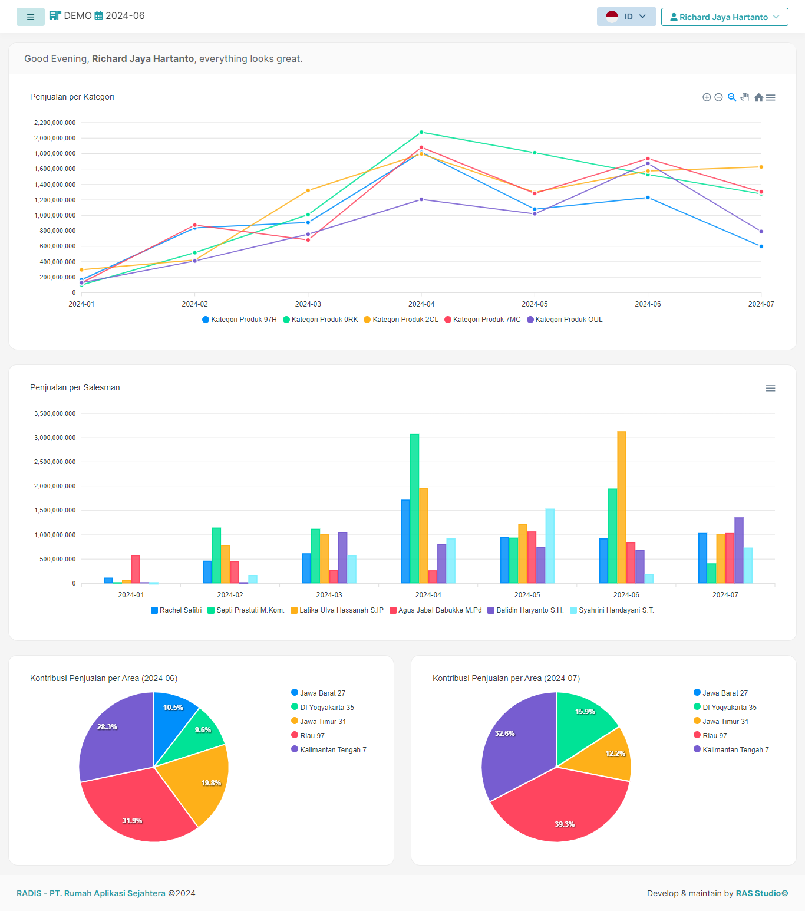
01Distribution ERP / SaaS
RADIS
Distribution ERP with multi-branch inventory, unit conversions, sales-force tracking, PPh/PPN compliance, FIFO valuation, general ledger, and P&L statements.
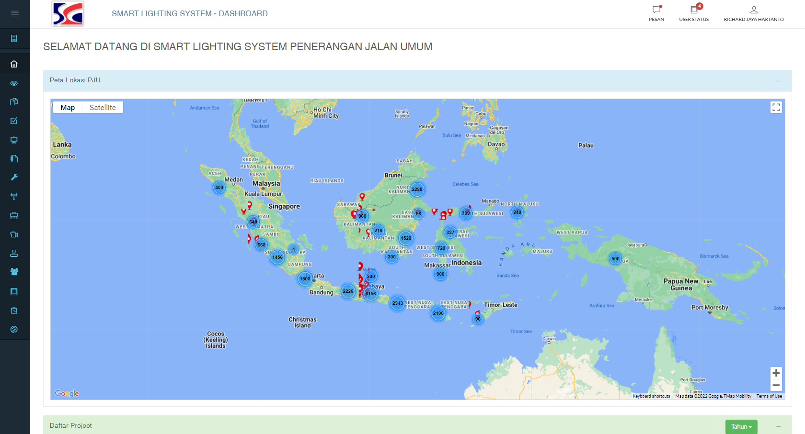
02IoT / field operations
IoT Smart Solar Streetlight System
MQTT services, custom UDP socket servers, Google Maps tracking, remote power toggles, and fault alerts for distributed streetlight operations.
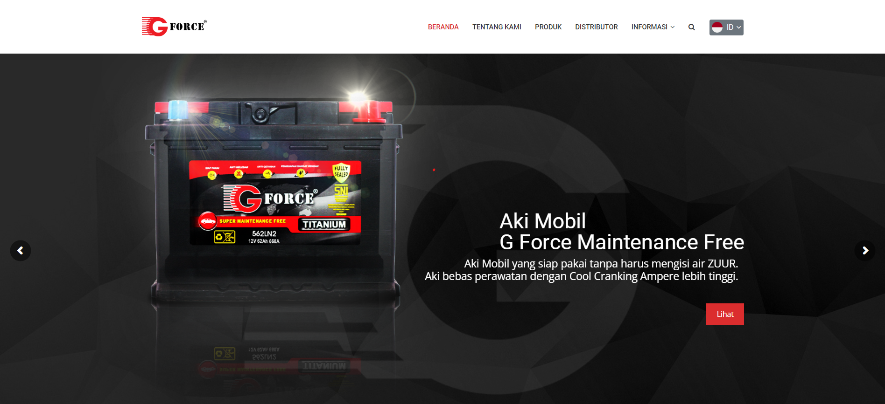
03POS / dealer operations
G-Force POS & Dealer Order Management Portal
Purchase-order recommendations, stock mutations, and sales-trend analytics that give sales and operations a shared view of demand.
Supporting portfolio
More signals from the workbench.
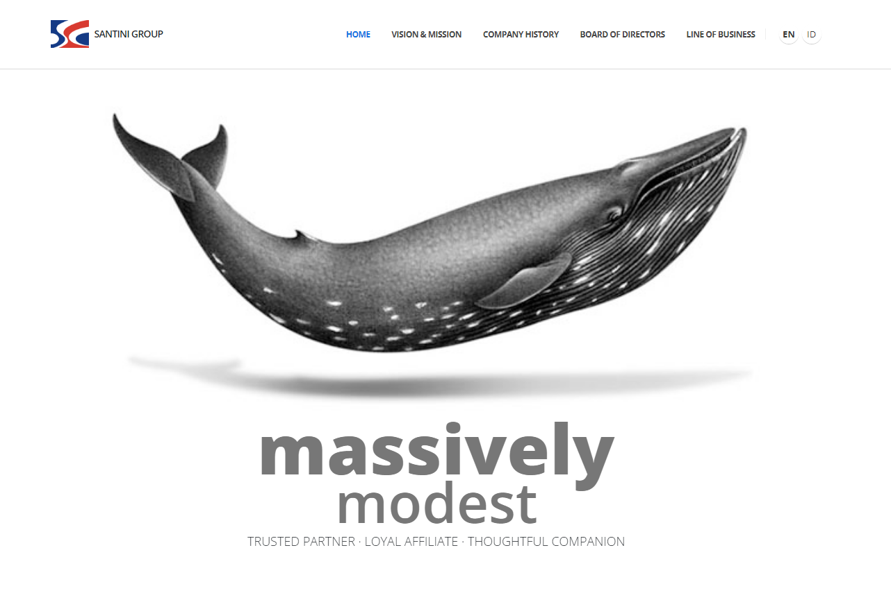
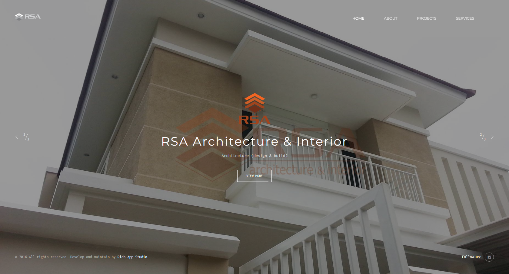
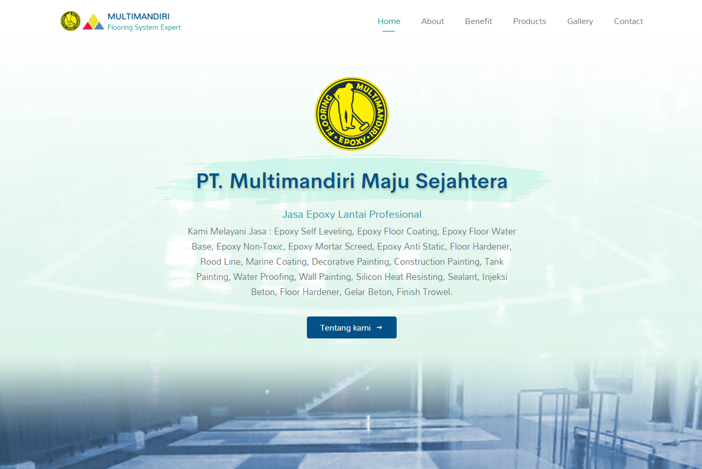
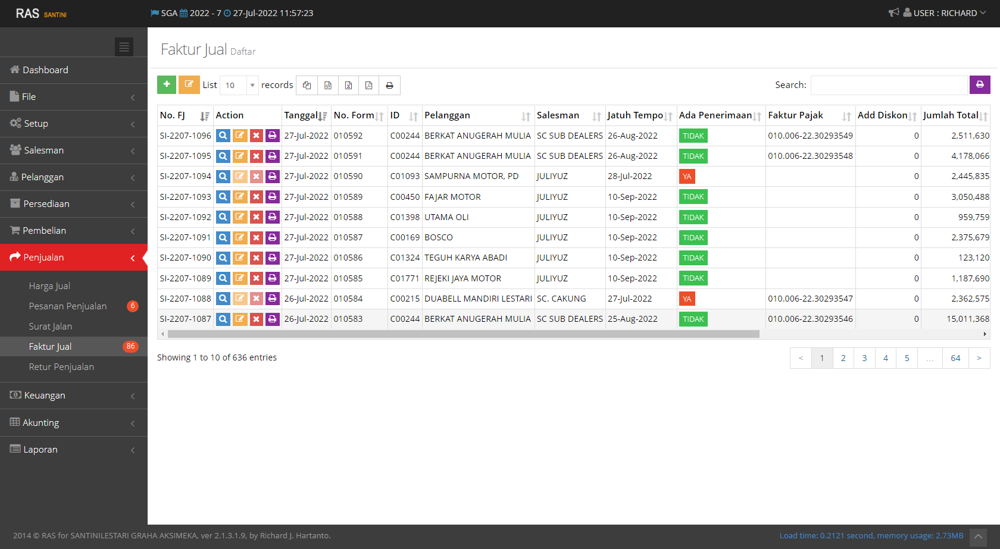
Web app / internal
RAS business tools
Internal systems and prototypes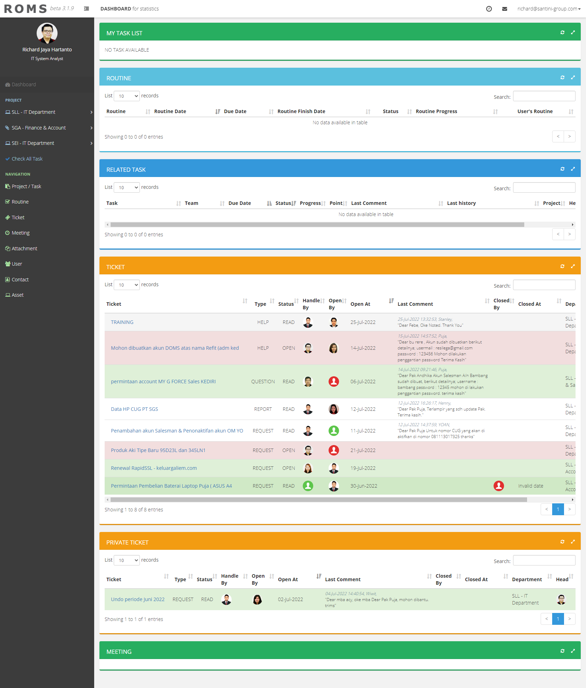
Web app / operations
ROMS
Internal operations system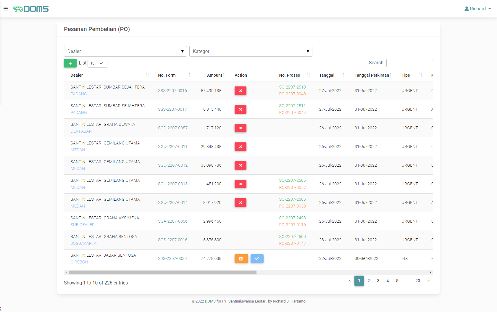
Web app / distribution
DOMS
Internal distribution system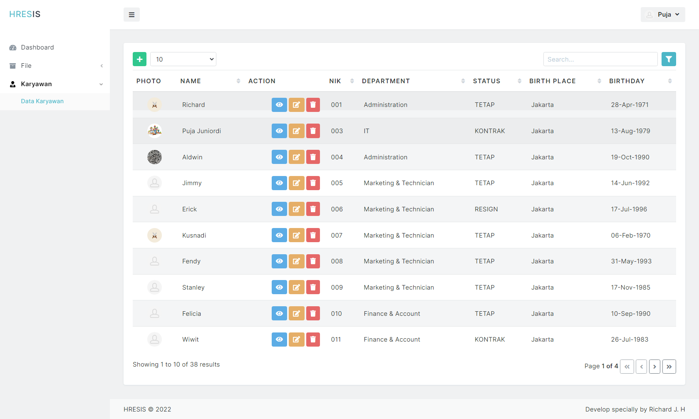
Web app / HR
HRESIS Web
Internal HR system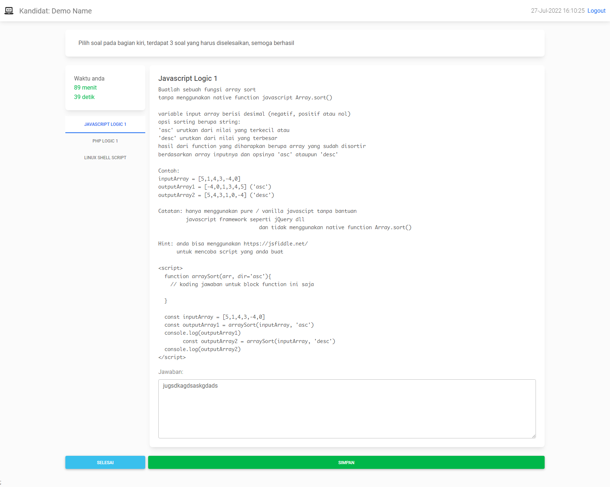
Prototype / interface
Operations prototype
Exploratory product work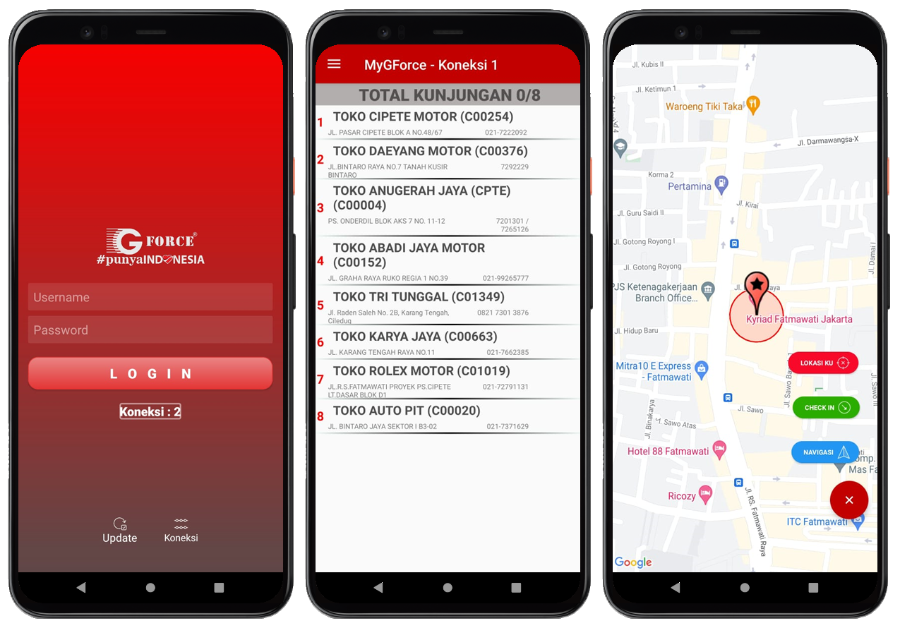
Mobile app / sales
MyGForce Mobile
Field-sales companion app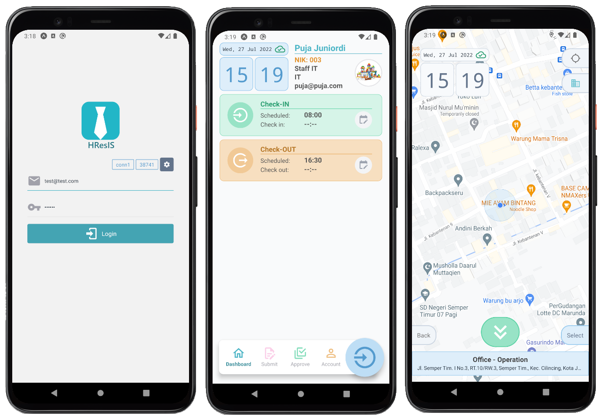
Mobile app / HR
HRESIS Mobile
Internal HR companion appEducation & recognition
Grounded in the details.
Formal training, measurable performance, and a habit of making the operating model part of the technical design.
2006
Bachelor of Computer Science (S.Kom)
Universitas Budi Luhur, Jakarta · Information Systems major
GPA 3.15 / 4.00 · Thesis: Hotel Package System
2016
Leadership Training Camp Certificate
MAXIMA Impact Indonesia
2018
Best Manager Award
PT Santiniluwansa Lestari
Scorecard 89.08
2021
Best Employee Grade III
PT Santiniluwansa Lestari
Scorecard 81.91
Start a conversation
Have a business problem that needs a system?
For hiring conversations, architecture work, or a thoughtful look at how technology could support your operation, I’m easy to reach.
Email Richard